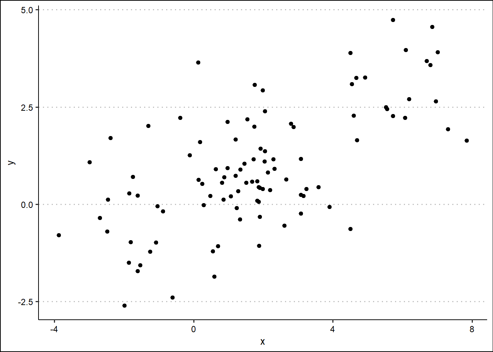
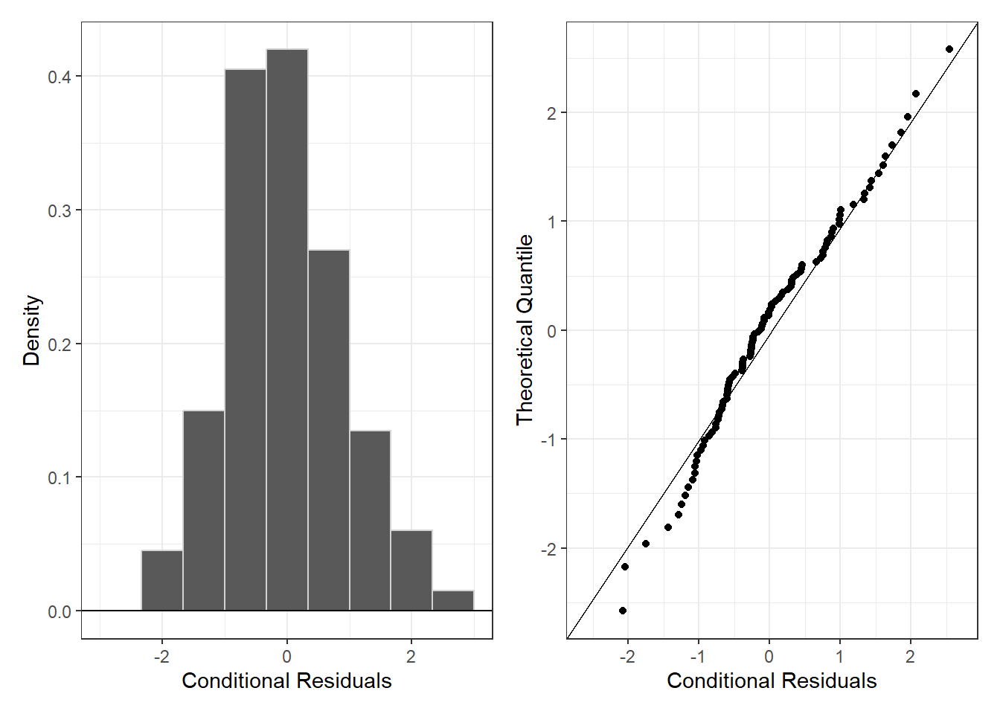
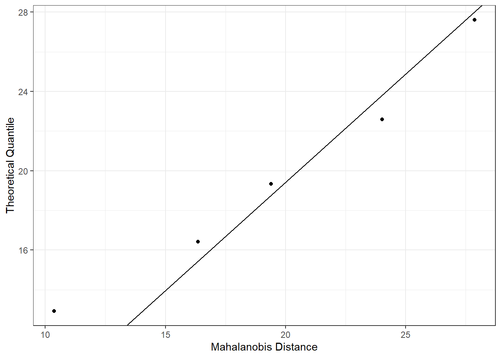
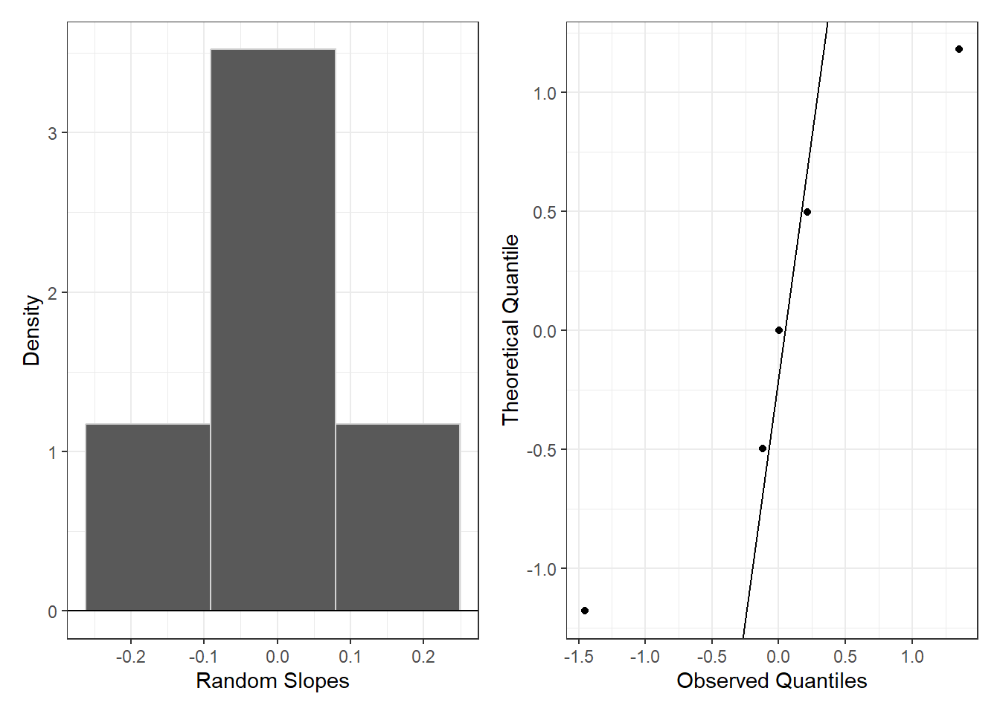

Code

Load the hw2data.csv data and create a scatterplot of x and y.
Fit an OLS linear regression model predicting y given x. Interpret the regression coefficient of \(x\).
Call:
lm(formula = y ~ x, data = dat)
Residuals:
Min 1Q Median 3Q Max
-2.5877 -0.8371 -0.0055 0.7648 3.3250
Coefficients:
Estimate Std. Error t value Pr(>|t|)
(Intercept) 0.27511 0.14498 1.898 0.0607 .
x 0.37339 0.04514 8.272 6.66e-13 ***
---
Signif. codes: 0 '***' 0.001 '**' 0.01 '*' 0.05 '.' 0.1 ' ' 1
Residual standard error: 1.195 on 98 degrees of freedom
Multiple R-squared: 0.4111, Adjusted R-squared: 0.4051
F-statistic: 68.42 on 1 and 98 DF, p-value: 6.659e-13Based on the coefficient of the lm model, for every unit increase in \(x\), we’d expect a 0.373 increase in \(y\).
Recreate a scatterplot of x and y, this time specify the color of the points using the subject.
Fit a random intercept model for y given x. Interpret the regression coefficient for the fixed effect of \(x\).
Linear mixed model fit by REML. t-tests use Satterthwaite's method [
lmerModLmerTest]
Formula: y ~ x + (1 | subject)
Data: dat
REML criterion at convergence: 299.1
Scaled residuals:
Min 1Q Median 3Q Max
-2.1108 -0.6933 -0.1682 0.7182 2.6146
Random effects:
Groups Name Variance Std.Dev.
subject (Intercept) 4.0580 2.0145
Residual 0.9394 0.9692
Number of obs: 100, groups: subject, 5
Fixed effects:
Estimate Std. Error df t value Pr(>|t|)
(Intercept) 1.40570 0.92288 3.70218 1.523 0.2080
x -0.24850 0.09639 95.68149 -2.578 0.0115 *
---
Signif. codes: 0 '***' 0.001 '**' 0.01 '*' 0.05 '.' 0.1 ' ' 1
Correlation of Fixed Effects:
(Intr)
x -0.190Based on the regression coefficient from our linear mixed effect model, for every unit increase in \(x\), we’d expect a 0.249 decrease in \(y\).
Fit a mixed effects model for y given x, with a random intercept and a random slope. Interpret the regression coefficient for the fixed effect of \(x\).
Linear mixed model fit by REML. t-tests use Satterthwaite's method [
lmerModLmerTest]
Formula: y ~ x + (x | subject)
Data: dat
REML criterion at convergence: 297.2
Scaled residuals:
Min 1Q Median 3Q Max
-2.1644 -0.6832 -0.1482 0.7590 2.6439
Random effects:
Groups Name Variance Std.Dev. Corr
subject (Intercept) 3.03807 1.7430
x 0.01518 0.1232 1.00
Residual 0.92290 0.9607
Number of obs: 100, groups: subject, 5
Fixed effects:
Estimate Std. Error df t value Pr(>|t|)
(Intercept) 1.1335 0.7972 3.4122 1.422 0.240
x -0.2439 0.1087 11.6713 -2.244 0.045 *
---
Signif. codes: 0 '***' 0.001 '**' 0.01 '*' 0.05 '.' 0.1 ' ' 1
Correlation of Fixed Effects:
(Intr)
x 0.349
optimizer (nloptwrap) convergence code: 0 (OK)
boundary (singular) fit: see help('isSingular')Based on the mixed effects model with random slopes and intercepts, for every unit increase in \(x\), we’d expect a 0.244 decrease in \(y\).
Assess whether the conditional residuals are consistent with the conditions for use for the mixed effects model fit in Question 2(e).
conditional.residuals <- resid(rand_slope_int_mod)
p.hist <- ggplot(data=tibble(r=conditional.residuals))+
geom_histogram(aes(x=r, y=after_stat(density)),
color="lightgrey",
breaks=seq(-3, 3, length.out=10))+
geom_hline(yintercept=0)+
theme_bw() +
xlab("Conditional Residuals")+
ylab("Density")
p.qq <- ggplot(data=tibble(r=conditional.residuals)) +
stat_qq(aes(sample=r)) +
stat_qq_line(aes(sample=r))+
theme_bw() +
coord_flip() +
ylab("Conditional Residuals")+
xlab("Theoretical Quantile")
library(patchwork)
p.hist + p.qq
Our conditional residuals appear roughly Gaussian distributed, with a histogram appearing normal and centered at 0, and residuals that fit well with a qq-plot.
Assess whether the marginal residuals are consistent with the conditions for use for the mixed effects model fit in Question 2(e).
dat <- dat |>
mutate(y.hat = model.matrix(rand_slope_int_mod) %*% fixef(rand_slope_int_mod)) |> mutate(r.marginal = y - y.hat)
Sigma.gamma <- as.matrix(VarCorr(rand_slope_int_mod)$subject) # estimated covariance
subjects <- unique(dat$subject)
dat.mem <- tibble(subject = subjects,
MD = NA)
for(i in 1:length(subjects)){
# Subject to check
curr.subject <- subjects[i]
curr.dat <- dat %>% filter(subject == curr.subject)
curr.n <- nrow(curr.dat)
# Bulid Covariance Matrix
var.r <- sigma(rand_slope_int_mod)^2 # estimated conditional error variance
Zi <- cbind(1, curr.dat$x)
Sigma.epsilon.i <- Zi %*% Sigma.gamma %*% t(Zi) + diag(var.r, nrow(curr.dat))
# Compute Distance
dat.mem$MD[i] = t(curr.dat$r.marginal) %*% solve(Sigma.epsilon.i) %*% curr.dat$r.marginal
}
ggplot(data = dat.mem) +
stat_qq(aes(sample=MD),
distribution = qchisq, dparams = (list(df=20))) +
stat_qq_line(aes(sample=MD),
distribution = qchisq, dparams = (list(df=20)))+
theme_bw() +
coord_flip() +
ylab("Mahalanobis Distance")+
xlab("Theoretical Quantile")
Based on a qq-plot, the Mahalanobis distances of the marginal residuals fit roughly with the ^2 (df = 20) distribution.
Assess whether the random effects are consistent with the conditions for use for the mixed effects model fit in Question 2(e).
random.intercepts <- ranef(rand_slope_int_mod)$subject[[1]]
p.hist <- ggplot(data=tibble(r=random.intercepts))+
geom_histogram(aes(x=r, y=after_stat(density)),
bins = 3,
color="lightgrey")+
geom_hline(yintercept=0)+
theme_bw() +
xlab("Random Intercepts")+
ylab("Density")
p.qq <- ggplot(data=tibble(r=scale(random.intercepts))) +
stat_qq(aes(sample=r)) +
stat_qq_line(aes(sample=r))+
theme_bw() +
coord_flip() +
ylab("Observed Quantiles")+
xlab("Theoretical Quantile")
p.hist + p.qqThe random intercepts don’t deviate from normality enough to warrant caution. The histogram is centered and peaked around 0. It’s difficult to say with only 5 points but the middle 3 points fit well with the qq-plot though the endpoints not as well.
random.slopes <- ranef(rand_slope_int_mod)$subject[[2]]
p.hist <- ggplot(data=tibble(r=random.slopes))+
geom_histogram(aes(x=r, y=after_stat(density)),
color="lightgrey",
bins = 3)+
geom_hline(yintercept=0)+
theme_bw() +
xlab("Random Slopes")+
ylab("Density")
p.qq <- ggplot(data=tibble(r=scale(random.slopes))) +
stat_qq(aes(sample=r)) +
stat_qq_line(aes(sample=r))+
theme_bw() +
coord_flip() +
ylab("Observed Quantiles")+
xlab("Theoretical Quantile")
p.hist + p.qq
The random slopes exhbit similar characteristics to the random intercepts. For 5 data points there’s room for enormous variability, therefore the histogram centered at 0 and the qq-plot with 3/5 well fitting data points should be sufficient in the case of this dataset.
Subjects <- unique(dat$subject)
random.effects <- as.matrix(ranef(rand_slope_int_mod)$subject)
Sigma.gamma <- as.matrix(VarCorr(rand_slope_int_mod)$subject) # estimated covariance
mem.raneffs <- tibble(Subject = subjects,
MD = NA)
for(i in 1:length(Subjects)) {
# Compute Distance
curr.raneffs <- random.effects[i, ]
mem.raneffs$MD[i] = t(curr.raneffs) %*% solve(Sigma.gamma) %*% curr.raneffs
}The random slopes and intercepts model is singular, so computations of the Mahalanobis distances are impossible for the random intercepts and slopes.
Compare the models fit in for the mixed effects model fit in Question 2 (d) and Question 2 (e). Does adding the random slopes discernibly improve model fit?
Data: dat
Models:
rand_int_mod: y ~ x + (1 | subject)
rand_slope_int_mod: y ~ x + (x | subject)
npar AIC BIC logLik -2*log(L) Chisq Df Pr(>Chisq)
rand_int_mod 4 305.73 316.15 -148.86 297.73
rand_slope_int_mod 6 307.71 323.34 -147.86 295.71 2.0145 2 0.3652The model with only random intercepts has slightly better AIC and BIC than the model with both random intercepts and random slopes. In an ANOVA test of model fit, there is not evidence for a discernible difference in model performance between the two different models (\(p=0.3652\)).
Dicken et al. (2025) investigate whether eating ultraprocessed foods affects weight loss even when you are following official healthy eating guidelines. The researchers assigned participants eight-week diets that are consistent with the National Health Service Eatwell Guide that outlines government policy about balanced diets for the United Kingdom:
The researchers assigned participants to one of two randomization arms:
Their work aims to evaluate whether it is just about the nutrients – what is in the food – or if it is the nutrients and how they are prepared. Specifically, they aimed to model the percent change in weight based on the diet followed, the randomization arm, and whether the participants worked the night shift. The researchers note that a diet may be less effective if it is the second diet they are on, and they want to assess that in the model.
Write out the observation-level regression model that the researchers should use using mathematical notation. Define variables you use in the equation in an itemized list under the regression equation.
\[\begin{align*} \Delta P_{ij} &= (\underbrace{\gamma_{0i}}_{\textrm{rand. int.}} + \beta_0) + \beta_1 I(x_{1ij} = \text{"Ultraprocessed Foods"}) + \\ & \beta_2 I(x_{2ij} = \text{"Arm 2"}) + \beta_3 I(x_{3ij} = \text{"Night Shift"}) + \\ & \beta_4 I(x_{1ij} = \text{"Ultraprocessed Foods"})(x_{2ij} = \text{"Arm 2"}) + \epsilon_{ij}, \end{align*}\] where:
Write out the subject-level regression model that the researchers should use using mathematical notation. Define variables you use in the equation in an itemized list under the regression equation.
\[\begin{align*} \mathbf{\Delta P}_i =& \mathbf{x}_i \boldsymbol{\beta} + \mathbf{z}_i \boldsymbol{\gamma}_i + \boldsymbol{\epsilon}_i \end{align*}\]
How can the researchers assess whether either diet is discernibly better? Write out an analysis plan for what specifically you would do once the data are collected.
Once the data are collected, I would define the mixed effects regression model as random intercept, where each subject has their own random intercept affecting their percent weight gain. I don’t think a random slopes model would be necessary here and would add more complication to the optimization, risking singularity. I would define the equation as written in part b, including the interaction between diet type and randomization arm to see if the effect of the diet is different based on which randomization arm each subject was in.
I would first take a summarizing look at the data, probably by creating a plot showing side-by-side boxplots of percent weight gain by diet plan.
After checking the assumptions regarding normality of conditional residuals, multivariate normality of marginal residuals, and normality of random intercepts, I would analyze the coefficient estimate of our \(\beta_1\) to see if it makes a statistically discernible difference in percent weight gain (\(\Delta P\)). This would be my recommended procedure to see if the diet alone makes a difference in percent weight gain.
How can the researchers assess whether a diet may be discernibly less effective if it is the second diet? Write out an analysis plan for what specifically you would do once the data are collected.
I would follow the procedure layed out in part e, but I would now analyze the coefficient estimate for our interaction term: \(\beta_4\). If that interaction term shows evidence of having a statistically discernible effect (\(p<0.05\)) on percent weight gain, then we can start trying to untangle the interaction.
If the interaction is worth untangling, I would first create a plot showing the confidence interval of the estimated marginal means of the percent weight gain grouped by diet plan and randomization arm.
I would then perform a contrast on the estimated marginal means of the diet plans, showing the difference in percent weight gain across diet plans, grouped by randomization arm, as such:
Randomization Arm 1:
Randomization Arm 2:
By testing if the effect of the diet plan changes by randomization arm, we account for that interaction between the two variables.
How can the researchers assess whether there was a discernible difference across randomization arms? Write out an analysis plan for what specifically you would do once the data are collected.
I would follow a procedure similar to parts c & d. This time, I would assess the \(\beta_2\) coefficient estimate of our model for indication that the randomization arm has a statistically discernible effect (\(p<0.05\)) on the percent change in weight. )
https://claude.ai/share/0d2c97de-9713-4f78-8d93-98bd333e73be is the conversastion with Claude that shows all of the AI assistance used during the completion of this homework.